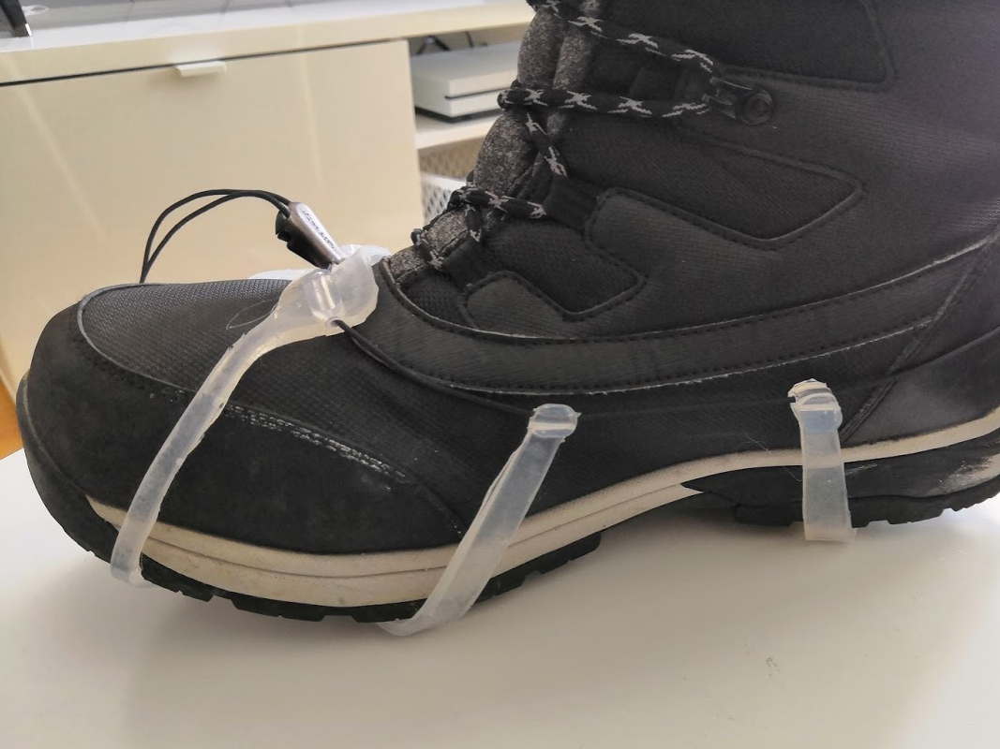

Group Project, Spring 2019
During the winter, streets can be slippery, especially in Finland. I own a dog, so I have to take him for a walk no matter what the weather is. I owned a pair of cleats made of silicone, that were extremely difficult to put on and came off very easily while walking, not to mention running. For this reason my friend and I decided to design an improved pair of cleats for a school course called Innovative Product Development.
The foundational idea was the create cleats that could be put on and taken off extremely easily, stowed away in a pouch or pocket, and which would stay on even when running. There are a lot of alternatives in the market, but most of them are heavy, difficult to put on and take off and won't fit a large variety of shoes.
We started playing around with mock-up versions of the cleats, including a net made from nylon strings, that would wrap around the sole. This gave us the idea to create a prototype from silicone, as it would be light, durable and flexible.
Finally, we made our functional prototype with cast silicone rubber on an aluminium mold. Metal spikes, which would provide traction, were embedded into the silicone during casting. For the tightening system we used a Salomon Quick Lace, as we didn't have the means to manufacture our own system.
Due to the limited scope of the project, the aim of the course was not to create a fully functioning product, but rather an advanced prototype, and in this we were successful. There could be room, however, to further develop this project to design our own quick release/tightening system and improve upon the geometry. We were able to test this prototype on walks and running, but on one of my runs a silicone wing broke off the prototype ended up in the trash.